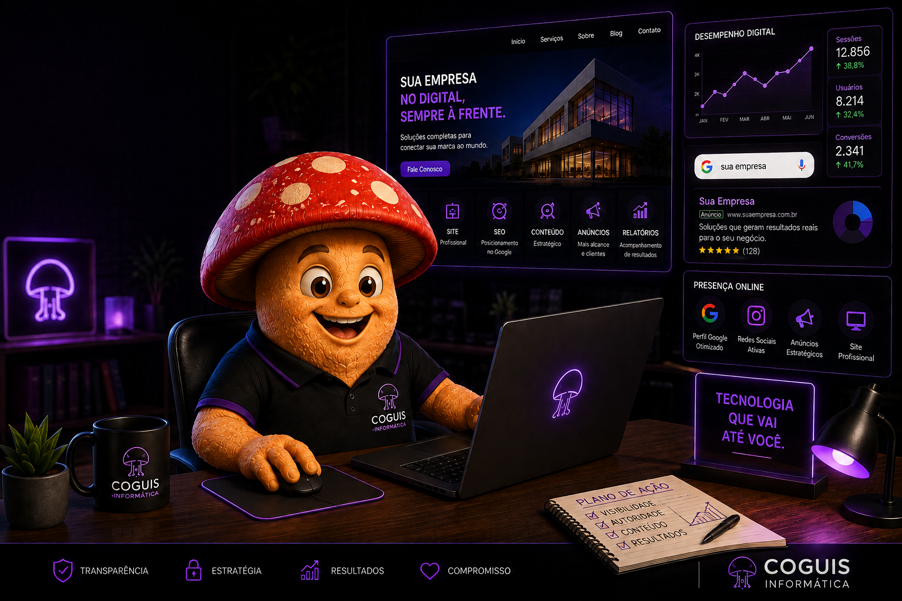

Introdução
Hoje, quando alguém precisa contratar um serviço, encontrar uma empresa ou pesquisar uma solução, é muito comum que o primeiro passo seja procurar na internet. Nesse cenário, estar presente no ambiente digital deixou de ser apenas um diferencial e passou a fazer parte da forma como uma empresa é encontrada e percebida pelos clientes.
Mas presença digital não significa simplesmente criar um perfil em uma rede social. Ela envolve o conjunto de canais, informações, conteúdos e experiências que representam uma empresa na internet, como site, mecanismos de busca, Google Perfil da Empresa, avaliações, redes sociais e outros pontos de contato.
Quando esses elementos trabalham de forma organizada e consistente, a empresa aumenta suas chances de ser encontrada, transmite mais confiança e cria novas oportunidades de relacionamento com potenciais clientes.
Neste artigo, você vai entender o que é presença digital, por que ela é importante para pequenas empresas e quais são os principais pilares para construir uma presença online profissional e confiável.
O que é presença digital?
Presença digital é a forma como uma empresa, profissional ou marca está representada e pode ser encontrada na internet. Ela é construída por todos os pontos de contato digitais que apresentam informações sobre o negócio e permitem que potenciais clientes conheçam seus serviços, sua reputação e suas formas de contato.
Isso significa que a presença digital de uma empresa não está concentrada em apenas uma plataforma. Um site profissional, o Google Perfil da Empresa, os resultados exibidos nos mecanismos de busca, as avaliações de clientes, as redes sociais e os conteúdos publicados fazem parte desse conjunto.
Na prática, esses canais ajudam a formar a percepção que uma pessoa terá sobre a empresa antes mesmo de realizar o primeiro contato. Informações atualizadas, identidade visual consistente, conteúdos úteis e formas de contato claras contribuem para transmitir organização, profissionalismo e confiança.
Por isso, construir presença digital não significa simplesmente estar na internet. O objetivo é criar uma presença organizada, coerente e útil para que as pessoas consigam encontrar a empresa, entender o que ela oferece e saber como entrar em contato.
Presença digital não é apenas estar nas redes sociais
Instagram, Facebook, LinkedIn e outras redes sociais podem fazer parte de uma estratégia digital, mas representam apenas alguns dos canais disponíveis. Depender exclusivamente deles pode limitar a forma como uma empresa é encontrada e apresentada na internet.
Uma pessoa pode descobrir uma empresa pesquisando seu nome no Google, procurando determinado serviço, consultando o Google Maps, acessando seu site ou lendo avaliações de outros clientes. Cada um desses pontos também participa da presença digital do negócio.
O ideal é que os diferentes canais se complementem. As redes sociais podem ajudar na comunicação e no relacionamento, enquanto o site concentra informações institucionais e conteúdos próprios, e os mecanismos de busca ajudam potenciais clientes a encontrar essas informações quando precisam delas.
Por que a presença digital é importante para uma empresa?
Ter uma boa presença digital aumenta as possibilidades de uma empresa ser encontrada justamente no momento em que alguém está procurando por seus produtos ou serviços. Para pequenos negócios e prestadores de serviços, isso pode significar alcançar clientes que talvez nunca conhecessem a empresa apenas pelos meios tradicionais.
A presença digital também participa diretamente da construção de confiança. Antes de entrar em contato, é comum que um potencial cliente pesquise o nome da empresa, visite seu site, consulte avaliações, confira informações no Google e observe como o negócio se apresenta na internet.
Quando essas informações são claras, atualizadas e consistentes, o cliente encontra menos barreiras para conhecer a empresa e decidir pelo contato. Por outro lado, informações desatualizadas, canais abandonados ou dados diferentes entre plataformas podem gerar dúvidas e prejudicar a percepção sobre o negócio.
- Ser encontrada com mais facilidade: aumenta os pontos pelos quais potenciais clientes podem descobrir a empresa.
- Transmitir mais confiança: uma apresentação profissional ajuda o cliente a conhecer melhor o negócio antes do primeiro contato.
- Manter informações acessíveis: serviços, horários, formas de contato e outras informações importantes podem ser consultados a qualquer momento.
- Construir reputação: conteúdos, avaliações e experiências de clientes ajudam a formar a percepção pública sobre a empresa.
- Criar novas oportunidades: diferentes canais digitais ampliam as possibilidades de gerar contatos, solicitações de orçamento e novos relacionamentos comerciais.
Os principais pilares da presença digital
Uma presença digital consistente não depende de uma única plataforma. Ela é construída pela combinação de diferentes canais e estratégias que ajudam a empresa a ser encontrada, apresentar seus serviços, comunicar-se com o público e construir confiança ao longo do tempo.
Nem toda empresa precisa utilizar todos os canais disponíveis. O mais importante é escolher aqueles que fazem sentido para o negócio e mantê-los organizados, atualizados e coerentes entre si.
Site profissional
O site funciona como um espaço próprio da empresa na internet. Nele é possível apresentar informações institucionais, serviços, formas de contato, projetos, conteúdos e outros elementos importantes sem depender exclusivamente das regras ou limitações de uma rede social.
Além de fortalecer a identidade da marca, um site bem estruturado pode servir como ponto central da presença digital, conectando outros canais utilizados pela empresa.
Google Perfil da Empresa
O Google Perfil da Empresa ajuda negócios elegíveis a gerenciar como suas informações aparecem na Pesquisa Google e no Google Maps. Dados como horário de funcionamento, telefone, localização ou área de atendimento, fotos e avaliações podem ajudar potenciais clientes a conhecer melhor a empresa antes de entrar em contato.
Manter essas informações corretas e atualizadas é especialmente importante para empresas que atendem clientes em uma determinada região.
SEO e mecanismos de busca
SEO reúne práticas utilizadas para facilitar a compreensão e a descoberta das páginas de um site pelos mecanismos de busca. Isso envolve aspectos técnicos, organização do conteúdo, qualidade das informações, experiência de navegação e diversos outros fatores.
O objetivo não deve ser simplesmente repetir palavras-chave, mas construir páginas úteis, claras e relevantes para as pessoas que procuram determinado assunto, produto ou serviço.
Conteúdo
Publicar conteúdos úteis permite responder dúvidas, explicar serviços, compartilhar conhecimento e demonstrar experiência sobre assuntos relacionados à atuação da empresa.
Artigos, guias, vídeos, estudos de caso e outros formatos podem fazer parte dessa estratégia, desde que tenham propósito e sejam realmente úteis para o público.
Redes sociais
As redes sociais podem aproximar a empresa do público e oferecer canais adicionais para comunicação, divulgação e relacionamento. A escolha das plataformas deve considerar onde o público da empresa está e qual tipo de conteúdo faz sentido produzir.
Elas funcionam melhor quando fazem parte de uma estratégia mais ampla, em vez de representarem toda a presença digital do negócio.
Reputação e avaliações
Avaliações e experiências compartilhadas por clientes também fazem parte da presença digital. Antes de contratar uma empresa, muitas pessoas consultam sua reputação online para obter mais informações sobre a experiência de outros consumidores.
Responder avaliações com profissionalismo, manter informações transparentes e oferecer uma boa experiência ao cliente contribuem para a construção dessa reputação ao longo do tempo.
Dicas práticas para melhorar a presença digital da sua empresa
Melhorar a presença digital não exige estar em todas as plataformas ao mesmo tempo. Para começar, vale concentrar esforços nos canais mais importantes para o negócio e garantir que as informações apresentadas sejam claras, atualizadas e consistentes.
- Pesquise o nome da sua empresa no Google: observe quais informações aparecem e verifique se telefone, horário, endereço, site e demais dados estão corretos.
- Mantenha o Google Perfil da Empresa atualizado: revise informações importantes, adicione fotos de qualidade e acompanhe as avaliações recebidas.
- Tenha um site claro e fácil de navegar: deixe evidente o que a empresa faz, quais serviços oferece e como o visitante pode entrar em contato.
- Padronize as informações da empresa: nome, telefone, endereço, identidade visual e outros dados importantes devem permanecer consistentes entre os diferentes canais.
- Produza conteúdo realmente útil: responda dúvidas comuns dos clientes e publique informações relacionadas aos serviços e à experiência da empresa.
- Escolha as redes sociais com propósito: não é necessário estar em todas elas. Priorize aquelas que fazem sentido para o público e para a capacidade da empresa de produzir conteúdo.
- Acompanhe sua reputação: leia e responda avaliações com profissionalismo e utilize o feedback dos clientes para identificar oportunidades de melhoria.
- Revise sua presença digital periodicamente: canais abandonados, links quebrados e informações antigas também afetam a maneira como a empresa é percebida na internet.

Como saber se sua empresa tem uma boa presença digital?
Uma forma simples de avaliar a presença digital da empresa é observar a experiência de alguém que ainda não conhece o negócio. Pesquise o nome da empresa, procure pelos serviços oferecidos e analise quais informações um potencial cliente consegue encontrar antes de entrar em contato.
Uma presença digital bem estruturada não precisa ser complexa, mas deve facilitar esse caminho. O cliente precisa conseguir identificar quem é a empresa, o que ela oferece, onde atua, como entrar em contato e encontrar elementos que transmitam confiança.
Algumas perguntas ajudam nessa avaliação:
- Sua empresa aparece quando alguém pesquisa seu nome no Google?
- As informações encontradas estão corretas e atualizadas?
- É fácil entender quais produtos ou serviços a empresa oferece?
- O cliente consegue encontrar rapidamente uma forma de contato?
- O site funciona corretamente em computadores e celulares?
- A identidade e as informações da empresa são consistentes entre os diferentes canais?
- Existem avaliações, conteúdos, projetos ou outras informações que ajudem a demonstrar a experiência e a credibilidade do negócio?
Se várias dessas respostas forem negativas, isso não significa que seja necessário reconstruir toda a estratégia digital de uma vez. O melhor caminho é identificar os pontos mais importantes, corrigir informações básicas e evoluir gradualmente os canais que realmente fazem sentido para o negócio.
Presença digital é uma construção contínua
Construir uma boa presença digital não significa estar em todas as plataformas ou utilizar todas as ferramentas disponíveis. O mais importante é garantir que os canais escolhidos representem corretamente a empresa, ofereçam informações úteis e facilitem o caminho de quem está procurando pelos seus produtos ou serviços.
Site, Google Perfil da Empresa, mecanismos de busca, conteúdos, redes sociais e avaliações podem desempenhar papéis diferentes dentro dessa estratégia. Quando trabalham de maneira organizada e consistente, ajudam a empresa a ser encontrada, apresentar melhor o seu trabalho e construir confiança ao longo do tempo.
Para pequenos negócios, esse processo pode começar de maneira simples: corrigir informações desatualizadas, organizar os principais canais, melhorar a apresentação dos serviços e entender como a empresa aparece para quem a procura na internet.
A presença digital também não termina depois que esses canais são criados. Informações mudam, novos conteúdos são publicados, clientes deixam avaliações e a própria empresa evolui. Por isso, revisar e melhorar essa presença periodicamente faz parte do processo.
Perguntas frequentes
O que é presença digital?
Presença digital é a forma como uma empresa, profissional ou marca está representada e pode ser encontrada na internet. Ela envolve diferentes pontos de contato, como site, mecanismos de busca, Google Perfil da Empresa, redes sociais, conteúdos e avaliações.
Minha empresa precisa de um site mesmo tendo redes sociais?
As redes sociais são importantes, mas cumprem uma função diferente de um site. O site oferece um espaço próprio para apresentar a empresa, seus serviços, conteúdos e formas de contato, enquanto as redes sociais dependem das regras e recursos de plataformas de terceiros. Os dois canais podem trabalhar de forma complementar.
Como começar a melhorar a presença digital de uma pequena empresa?
Comece verificando como sua empresa aparece na internet. Pesquise seu nome no Google, confira se as informações estão atualizadas, organize os principais canais, facilite as formas de contato e priorize as plataformas que realmente fazem sentido para o seu público e para o seu negócio.